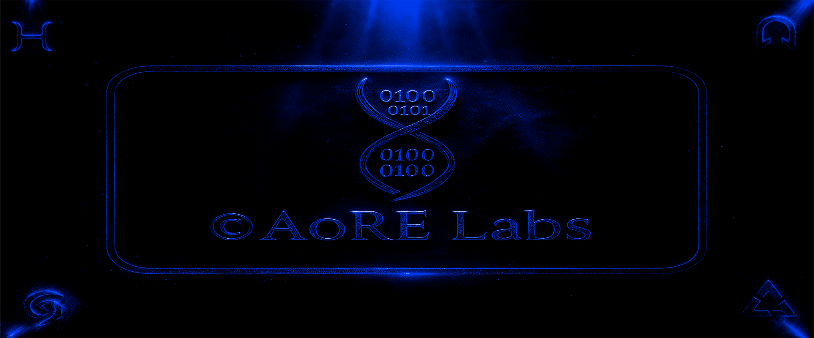
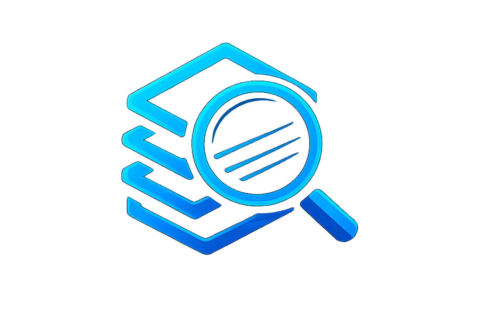
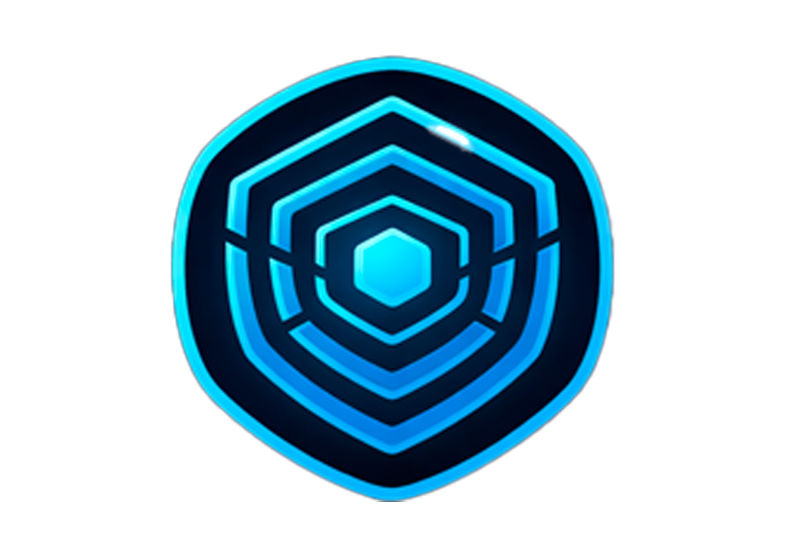

===============================================================
___ ____ _____ _ _
/ _ \ | _ \| ____| | | __ _| |__ ___
| |_| | ___ | |_) | _| | | / _` | '_ \/ __|
| _ |/ _ \ | _ <| |___ | |__| (_| | |_) \__ \
|_| |_|\___/ |_| \_\_____| |_____\__,_|_.__/|___/
S I N C E 2 0 0 6 // R L S
===============================================================
[+] INITIALIZING VIRTUAL ENVIRONMENT... OK
[+] BYPASSING RING 3... OK
[+] DECRYPTING PAYLOAD...
===============================================================

AoRE Labs - since 2006
Focused tools and professional services covering engineering, deep analysis, and protection. We improve maintainability and performance, harden software against tampering and abuse, and deliver structured research reports with actionable findings.

Code review, optimization, and architecture upgrades.
Anti-tamper and anti-reverse engineering layers with low overhead.

Deep analysis and structured NFO drops for third-party software. Scene rules apply.